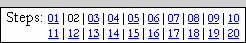

| PART I: YOUR FACE | |
| Step 02: Getting Started on Your Face |  |
Welcome to the Student Astronaut Project! This project is broken into three parts:
Part I: Your Face (Steps 02-08)
Part II: The Space Scene (Steps 09-17)
Part III: The Animation (Steps 18-20)
OK, let's get started! For Part I of our Photopea work, we will be taking a photograph of you and using Photopea to turn it into a full-color cartoon image. Along the way we will learn how to use a wide variety of Photopea's tools.
That is, if you actually
read and follow all of the directions
(that is now three times I've said that...why aren't you doing it?)
Seriously, do not try to skip the text and just look at the pictures - a
great deal of information is included in the text that is
not reflected in the pictures. This was done on purpose. To complete this
project you must read and follow the directions.
We will use this cartoon version of our face in Part III of the project when we create the animation and make ourselves fly through space (I know, cool, huh?).
We need to begin by getting your picture saved onto your device.
Your picture should be rather large. Don't panic - this is a good thing. It is good practice to work with an image that is larger than you need. The tiny errors that inevitably occur will be easier to correct in the higher resolution, and those small ones that slip by you are less visible when you shrink the image down.
Notice that when we saved our image, we used the .PSD format - this is important. This is the Photoshop Document format and ensures that all layers and enhancements that we have applied are saved. A .PSD file has a height and width limit of 300,000 pixels and a size limit of 2 Gigabytes...so, yeah, you can make a pretty darn big image in Photopea (and get this, there is a .PSB file type available in Photoshop that allows you to create an image up to 4 Exabytes in size!). .PSD files can not only be edited by Photopea, but can also be opened in Photoshop and edited using other Adobe software such as After Effects, Premiere, and Illustrator.
Keep one very important point in mind as you work with Photopea. Since it is an online based image editing tool, you need to be careful letting it run for long periods of time as it may reload itself and you could lose any changes that you have not saved. Photopea is intended to run on your machine even after you have disconnected from the Internet, but don't count on that. Always save your image if you plan to stop working on it for more than a short period of time.
01 | 02 | 03 | 04 | 05 | 06 | 07 | 08 | 09 | 10 | 11 | 12 | 13 | 14 | 15 | 16 | 17 | 18 | 19 | 20